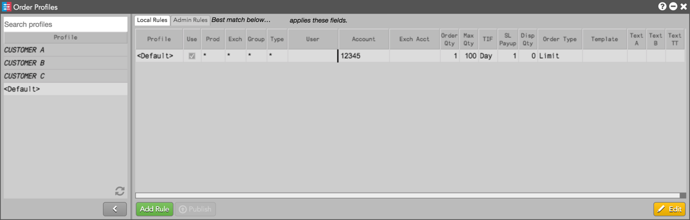
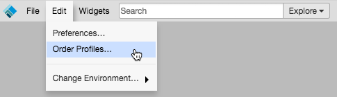
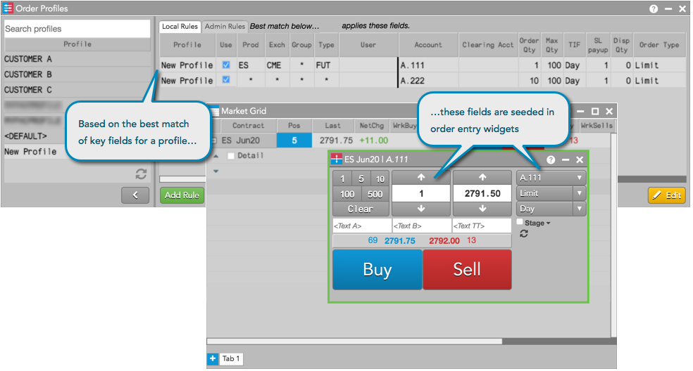

Using the Order Profiles widget, you can create order default settings that seed order entry widgets on TT. In addition to the profiles set up by your administrator, you can define and apply your own custom order profiles and local default settings with seeding rules for order entry based on the market, product, product group, and product type. You can also define fields in the profile that can be applied to the order, such as order type, maximum order size, time-in-force restriction, and more.

To open the widget, click Edit in the workspace tool bar and select Order Profiles...

When you open Order Profiles, a default profile is displayed. Profiles configured by your administrator are also displayed. The default profile cannot be deleted and is active whenever the Order Profiles widget is closed.
The Order Profiles widget gives you the ability to set which rules are active for trading. When you submit an order with a selected Order Profile, the Trade application looks for a best match rule based on the product, exchange, product group, and product type key fields. The variable fields for the best matched rule are then seeded in your open order entry widgets.

When you launch MD Trader or an Order Ticket, these widgets are also seeded based on the best matched rule for the profile selected in Order Profiles. If the Order Profiles widget is not open, the best matched rule for the <Default> profile is used to seed order entry widgets.
An account set for a profile rule with Exch set to "Autospreader" (ASE) seeds as the account in the parent Autospreader order and also in all of the legs. If the account is blank for an Autospreader profile rule, then the parent account will seed as the best matched rule for the first leg of the spread, and the leg accounts will seed based on the best matched rule for each leg.
When you submit an order, TT servers will automatically populate any blank fields in the Order Ticket or MD Trader with the values configured by your administrator when the order is sent to the exchange.
Also, any fields that you modify (e.g., the account field) in the Order Ticket or MD Trader will override administrator settings when you submit the order.
Tip: To select order profiles at order entry, you have the option to show an order profile dropdown in the Order Ticket and MD Trader. To enable this preference, check Show order profile dropdown in Preferences | Orders.
If MiFID II fields are configured for a profile in Setup by your risk administrator, the profile will appear in the left panel of Order Profiles. If you select that profile for trading, the applicable MiIFD II fields will be applied to the order and sent to the exchange. Profiles with MiFID II fields set by your administrator cannot be edited in the Order Profiles widget.
Refer to Order Profiles Reference for a description of each column.